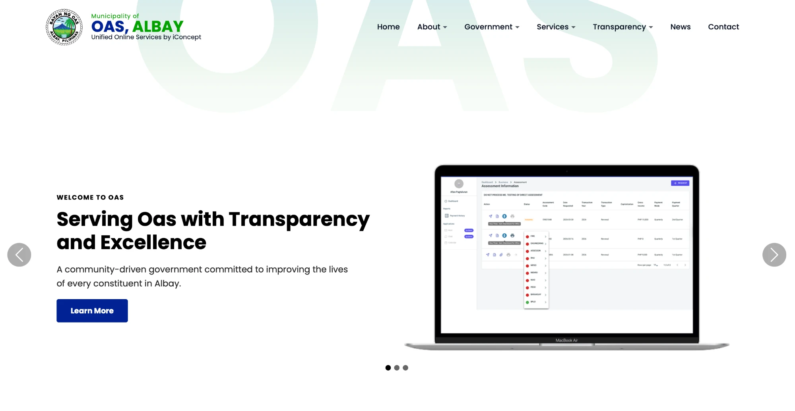
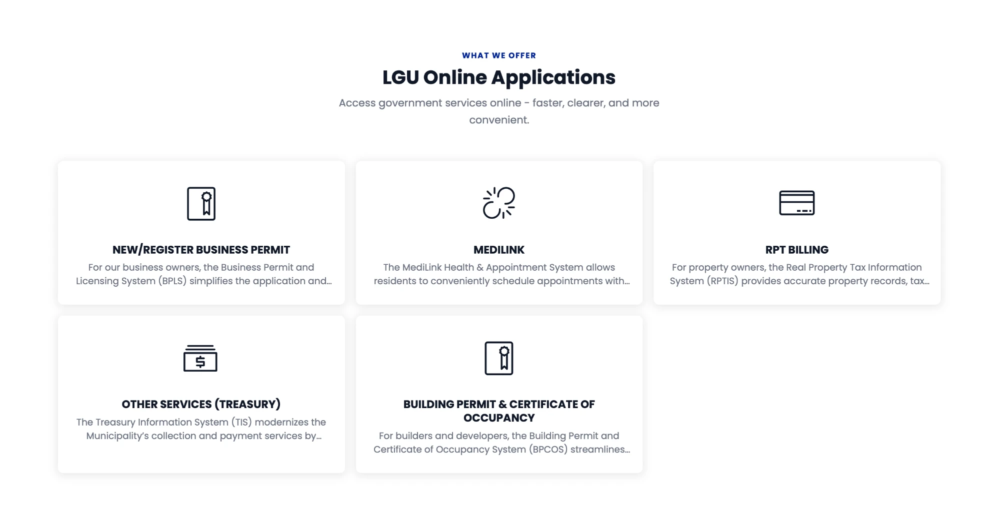

This manual explains how to use the online services of the Municipality of Oas, Albay, which are delivered through one unified platform built by iConcept IT Solutions.
OAS Unified Online Services brings the municipality's online systems together under one website. Residents, business owners, property owners and builders can find the service they need in one place, and each service has its own dedicated system. Using these systems means faster processing, clearer information on the status of an application, and more efficient service from the local government.


The home page lists five online applications. Choose the one that matches your need.
| Application | Who it is for and what it does | Address |
|---|---|---|
| New/Register Business Permit (BPLS) |
Business owners. The Business Permit and Licensing System simplifies the application and renewal of business permits, with faster processing and real-time application status. | ebpls.oas.lguapp.com |
| MediLink | Residents. The Health & Appointment System lets you schedule appointments with the Municipal Health Office, receive reminders and access health services with less waiting time. | medilink.oas.lguapp.com |
| RPT Billing (RPTIS) |
Property owners. The Real Property Tax Information System provides property records, tax assessments and billing information. | rptpayment.oas.lguapp.com |
| Other Services (Treasury) (TIS) |
Anyone paying the municipality. The Treasury Information System handles secure payment processing, official receipt generation, real-time transaction posting and financial reporting. | tis.oas.lguapp.com |
| Building Permit & Certificate of Occupancy (BPCOS) |
Builders and developers. The system covers permit applications, compliance verification, inspections and occupancy certification, in line with the National Building Code. | bpcos.oas.lguapp.com |
Besides the online applications, the OAS website publishes information from the local government. Use the menu at the top of the page to reach:
| Menu | What you will find |
|---|---|
| About | History, municipal profile and the Mayor's message. |
| Government | Executive officials, departments and offices, and the Sangguniang Bayan. |
| Services | Service information, including Real Property Tax, Business Permit and the Citizen's Charter. |
| Transparency | Transparency reports, Full Disclosure Policy (FDP) reports, and Bids & Awards. |
| News | News and announcements from the Office of the Mayor, plus photo releases, speeches, achievements and the gallery. |
| Contact | How to reach the municipality. |